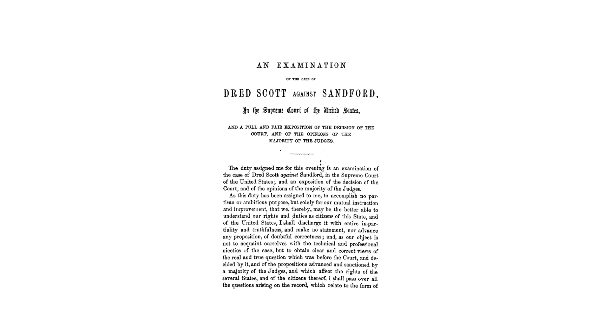

This article is a discussion of the Dred Scott v. Sandford case, which was a pivotal slavery era case that denied citizenship rights to freed slaves. The 20 page article was written at the request of The Geneva Literary and Scientific Association and it was intended to be a full and fair account of the case and the Justice's decision. For more information on the Dred Scott v. Sandford case you can read more at the link below.
Wikipedia Article